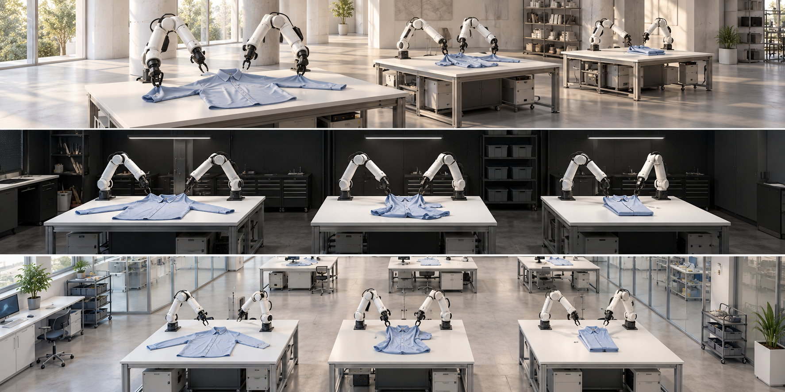

VISUAL DIRECTION STUDIES / 25
One project. Three compositions.
Environment concepts are AI-generated design references. Robot motion and scientific results will use recorded trajectories.
01 / CONTINUOUS STUDIOShared space · readable medium view · quiet daylight
ClothDojo↗
Learned Data Generation and Benchmarking for Bimanual Garment Flattening and Folding

Complex actions. Many valid trajectories. More experience.Code ↗ Results ↗
02 / RESEARCH EDITORIALStrong typography · precise evidence · open layout
ClothDojo.
A LEARNED DATA GENERATOR
Learned Data Generation and Benchmarking for Bimanual Garment Flattening and Folding
Complex manipulation experience,
continuously regenerated.
01 Learn complex actions
02 Explore different solutions
03 Generate across garments
04 Reuse the experience
03 / IMMERSIVE LABORATORYDark architecture · controlled light · image-led composition
ClothDojo
Learned Data Generation and Benchmarking for Bimanual Garment Flattening and Folding
From one difficult action to a renewable collection.Explore the research ↗
DESIGN DECISION
Develop the continuous studio.
A coherent light laboratory gives the actions and garment geometry the strongest visibility. Use the editorial direction’s typography and evidence layout below it. Camera movement should travel between readable workspaces, with only a short scale overview.
Next: spatial camera previewThen: real-trajectory sample